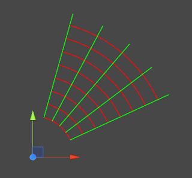

Polar grid drawing refined
Category: progress
Tags: old-blog
Hello again
Last time I showed a preview of polar grids it was a full cycle starting from the origin containing all layers up to the edge. During runtime if only part of the grid is visible to the player rendering the whole thing can be a waste of resources, that's why you have the option of specifying a specific rendering range.
I was trying out several approaches of interpreting the rectangular range, but in the end I went for a polar approach. What does this mean? You have two Vector3 values, one called renderFrom, the other called renderTo. The x-coordinate tells what radius to start and end at, the y-coordinate gives us the starting and ending angle and the z-coordinate gives us the starting and ending layer. Here is an example of what if can look like:

The only limitations are that the starting radius cannot be less than 0 and starting values cannot be larger than ending values (and vice-versa). The only exception is the angle, this is is necessary in order to be able to draw a sector from, let's say 300° to 15° (which can be seen as from 300° to 375°).
This has been the biggest roadblock so far, now I need to do some proper testing and final polish, write the new documentation and I can submit the update to Unity. Supporting a new type of grid is a substantial effort and, since everything is interconnected, it usually requires going through the code for the other grids as well. Sometimes parts that seemed general enough might need to be overridden and other parts that seemed very specific become more general and need to be moved up the hierarchy. Considering this and the updates since the release of version 12.0 I believe raising the price to from 20$ to 25$ is appropriate.
Of course, as usual, if you already bought Grid Framework all updates are free for you. If you intend to buy Grid Framework, now is the chance to still get it for the lower price. You don't need to rush and get it immediately though, I'll post an at least one more update before I submit version 1.3.0.
As always, thank you for your support
HiPhish